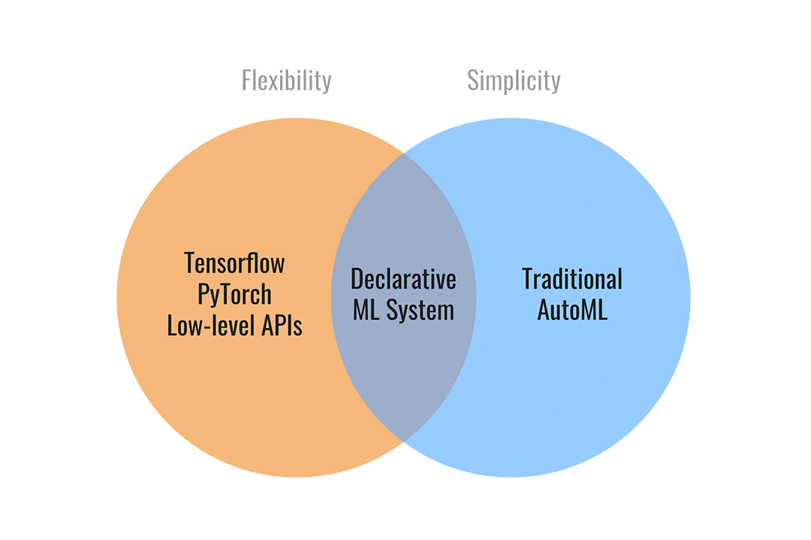

Ludwig


Declarative machine learning: End-to-end machine learning pipelines using simple and flexible data-driven configurations.


What is Ludwig?¶
Ludwig is a declarative machine learning framework that makes it easy to define machine learning pipelines using a simple and flexible data-driven configuration system. Ludwig is suitable for a wide variety of AI tasks, and is hosted by the Linux Foundation AI & Data.
The configuration declares the input and output features, with their respective data types. Users can also specify additional parameters to preprocess, encode, and decode features, load from pre-trained models, compose the internal model architecture, set training parameters, or run hyperparameter optimization.

Ludwig will build an end-to-end machine learning pipeline automatically, using whatever is explicitly specified in the configuration, while falling back to smart defaults for any parameters that are not.
Declarative Machine Learning¶
Ludwig’s declarative approach to machine learning empowers you to have full control of the components of the machine learning pipeline that you care about, while leaving it up to Ludwig to make reasonable decisions for the rest.

Analysts, scientists, engineers, and researchers use Ludwig to explore state-of-the-art model architectures, run hyperparameter search, scale up to larger than available memory datasets and multi-node clusters, and finally serve the best model in production.
Finally, the use of abstract interfaces throughout the codebase makes it easy for users to extend Ludwig by adding new models, metrics, losses, and preprocessing functions that can be registered to make them immediately useable in the same unified configuration system.
Main Features¶
A config YAML file that describes the schema of your data (input features, output features, and their types) is all you need to start training deep learning models. Ludwig uses declared features to compose a deep learning model accordingly.
input_features:
- name: data_column_1
type: number
- name: data_column_2
type: category
- name: data_column_3
type: text
- name: data_column_4
type: image
...
output_features:
- name: data_column_5
type: number
- name: data_column_6
type: category
...
Simple commands can be used to train models and predict new data.
ludwig train --config config.yaml --dataset data.csv
ludwig predict --model_path results/experiment_run/model --dataset test.csv
ludwig eval --model_path results/experiment_run/model --dataset test.csv
Ludwig also provides a simple programmatic API for all of the functionality described above and more.
from ludwig.api import LudwigModel
# train a model
config = {
"input_features": [...],
"output_features": [...],
}
model = LudwigModel(config)
data = pd.read_csv("data.csv")
train_stats, _, model_dir = model.train(data)
# or load a model
model = LudwigModel.load(model_dir)
# obtain predictions
predictions = model.predict(data)
Train models in a distributed setting using Horovod, which allows training on a single machine with multiple GPUs or multiple machines with multiple GPUs.
Serve models using FastAPI.
ludwig serve --model_path ./results/experiment_run/model
curl http://0.0.0.0:8000/predict -X POST -F "movie_title=Friends With Money" -F "content_rating=R" -F "genres=Art House & International, Comedy, Drama" -F "runtime=88.0" -F "top_critic=TRUE" -F "review_content=The cast is terrific, the movie isn't."
Run hyperparameter optimization locally or using Ray Tune.
ludwig hyperopt --config config.yaml --dataset data.csv
Ludwig AutoML takes a dataset, the target column, and a time budget, and returns a trained Ludwig model.
Ludwig provides an extendable interface to integrate with third-party systems for tracking experiments. Third-party integrations exist for Comet ML, Weights & Biases, WhyLabs, and MLFlow.
Ludwig is built from the ground up with extensibility in mind. It is easy to add new data types by implementing clear, well-documented abstract classes that define functions to preprocess, encode, and decode data.
Furthermore, new torch nn.Module models can be easily added by them to a
registry. This encourages reuse and sharing new models with the community.
Refer to the Developer Guide
for further details.
Quick Start¶
For a full tutorial, check out the official getting started guide, or take a look at end-to-end Examples.
Step 1: Install¶
Install from PyPi. Be aware that Ludwig requires Python 3.7+.
pip install ludwig
Step 2: Define a configuration¶
Create a config that describes the schema of your data.
Assume we have a text classification task, with data containing a sentence and class column like the following.
| sentence | class |
|---|---|
| Former president Barack Obama ... | politics |
| Juventus hired Cristiano Ronaldo ... | sport |
| LeBron James joins the Lakers ... | sport |
| ... | ... |
A configuration will look like this.
input_features:
- name: sentence
type: text
output_features:
- name: class
type: category
Starting from a simple config like the one above, any and all aspects of the model architecture, training loop, hyperparameter search, and backend infrastructure can be modified as additional fields in the declarative configuration to customize the pipeline to meet your requirements.
input_features:
- name: sentence
type: text
encoder: transformer
layers: 6
embedding_size: 512
output_features:
- name: class
type: category
loss: cross_entropy
trainer:
epochs: 50
batch_size: 64
optimizer:
type: adamw
beat1: 0.9
learning_rate: 0.001
backend:
type: ray
cache_format: parquet
processor:
type: dask
trainer:
use_gpu: true
num_workers: 4
resources_per_worker:
CPU: 4
GPU: 1
hyperopt:
metric: f1
sampler: random
parameters:
title.num_layers:
lower: 1
upper: 5
trainer.learning_rate:
values: [0.01, 0.003, 0.001]
For details on what can be configured, check out Ludwig Configuration docs.
Step 3: Train a model¶
Simple commands can be used to train models and predict new data.
ludwig train --config config.yaml --dataset data.csv
Step 4: Predict and evaluate¶
The training process will produce a model that can be used for evaluating on and obtaining predictions for new data.
ludwig predict --model path/to/trained/model --dataset heldout.csv
ludwig evaluate --model path/to/trained/model --dataset heldout.csv
Step 5: Visualize¶
Ludwig provides a suite of visualization tools allows you to analyze models' training and test performance and to compare them.
ludwig visualize --visualization compare_performance --test_statistics path/to/test_statistics_model_1.json path/to/test_statistics_model_2.json
For the full set of visualization see the Visualization Guide.
Step 6: Happy modeling¶
Try applying Ludwig to your data. Reach out if you have any questions.
Advantages¶
- Minimal machine learning boilerplate
Ludwig takes care of the engineering complexity of machine learning out of
the box, enabling research scientists to focus on building models at the
highest level of abstraction. Data preprocessing, hyperparameter
optimization, device management, and distributed training for
torch.nn.Module models come completely free.
- Easily build your benchmarks
Creating a state-of-the-art baseline and comparing it with a new model is a simple config change.
- Easily apply new architectures to multiple problems and datasets
Apply new models across the extensive set of tasks and datasets that Ludwig supports. Ludwig includes a full benchmarking toolkit accessible to any user, for running experiments with multiple models across multiple datasets with just a simple configuration.
- Highly configurable data preprocessing, modeling, and metrics
Any and all aspects of the model architecture, training loop, hyperparameter search, and backend infrastructure can be modified as additional fields in the declarative configuration to customize the pipeline to meet your requirements. For details on what can be configured, check out Ludwig Configuration docs.
- Multi-modal, multi-task learning out-of-the-box
Mix and match tabular data, text, images, and even audio into complex model configurations without writing code.
- Rich model exporting and tracking
Automatically track all trials and metrics with tools like Tensorboard, Comet ML, Weights & Biases, MLFlow, and Aim Stack.
- Automatically scale training to multi-GPU, multi-node clusters
Go from training on your local machine to the cloud without code changes.
- Low-code interface for state-of-the-art models, including pre-trained Huggingface Transformers
Ludwig also natively integrates with pre-trained models, such as the ones available in Huggingface Transformers. Users can choose from a vast collection of state-of-the-art pre-trained PyTorch models to use without needing to write any code at all. For example, training a BERT-based sentiment analysis model with Ludwig is as simple as:
ludwig train --dataset sst5 --config_str “{input_features: [{name: sentence, type: text, encoder: bert}], output_features: [{name: label, type: category}]}”
- Low-code interface for AutoML
Ludwig AutoML allows users to obtain trained models by providing just a dataset, the target column, and a time budget.
auto_train_results = ludwig.automl.auto_train(dataset=my_dataset_df, target=target_column_name, time_limit_s=7200)
- Easy productionisation
Ludwig makes it easy to serve deep learning models, including on GPUs. Launch a REST API for your trained Ludwig model.
ludwig serve --model_path=/path/to/model
Ludwig supports exporting models to efficient Torschscript bundles.
ludwig export_torchscript -–model_path=/path/to/model
Tutorials¶
Example Use Cases¶
- Named Entity Recognition Tagging
- Natural Language Understanding
- Machine Translation
- Chit-Chat Dialogue Modeling through seq2seq
- Sentiment Analysis
- One-shot Learning with Siamese Networks
- Visual Question Answering
- Spoken Digit Speech Recognition
- Speaker Verification
- Binary Classification (Titanic)
- Timeseries forecasting
- Timeseries forecasting (Weather)
- Movie rating prediction
- Multi-label classification
- Multi-Task Learning
- Simple Regression: Fuel Efficiency Prediction
- Fraud Detection
More Information¶
Read our publications on Ludwig, declarative ML, and Ludwig’s SoTA benchmarks.
Learn more about how Ludwig works, how to get started, and work through more examples.
If you are interested in contributing, have questions, comments, or thoughts to share, or if you just want to be in the know, please consider joining the Ludwig Slack and follow us on Twitter!